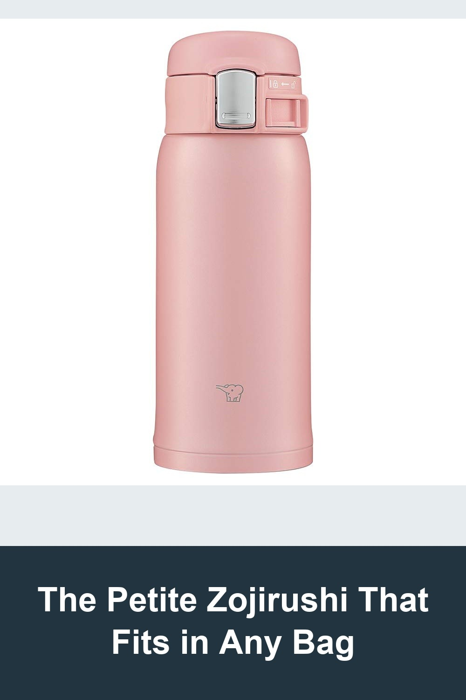
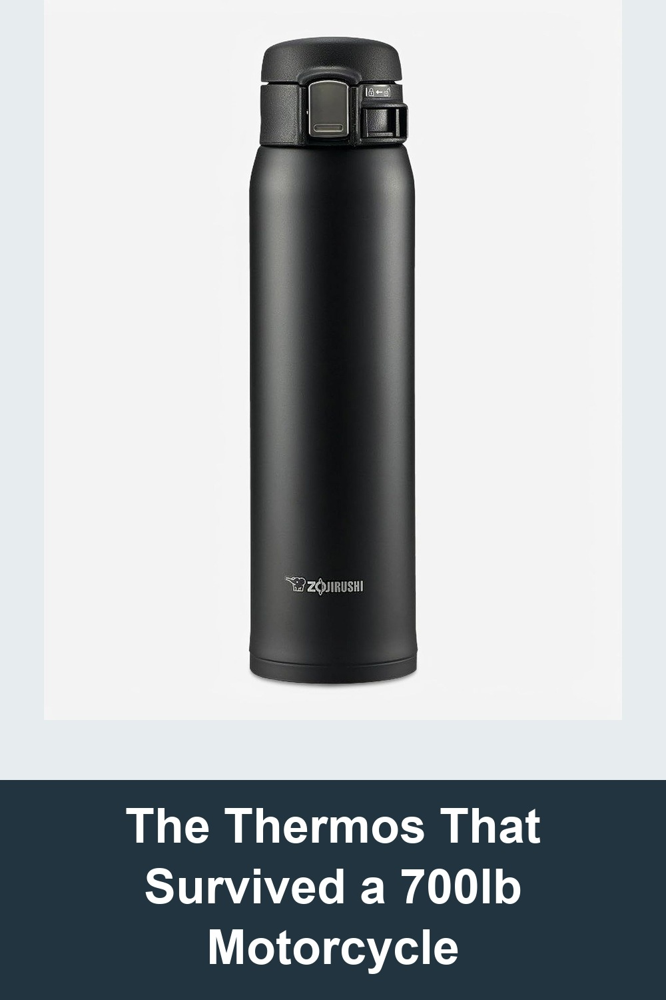
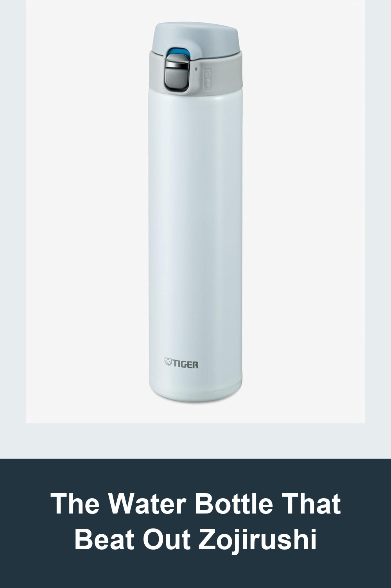

Zojirushi SM-SF36-PA Water Bottle, Direct Drinking One-Touch Open, 12.2 fl oz
A compact 12oz one-touch bottle from the brand that's been making vacuum flasks since 1918. Small enough to slip into a purse or coat pocket, with the same vacuum insulation that keeps drinks hot or cold for hours. One-hand open, fully disassembles for cleaning.
People don't even know about this company in America besides Rice makers. All over Asia these guys are king... The one I had never leaked always kept my water hot... This bottle is hands-down, my favorite design.— verified Amazon buyer
View on Amazon →
Zojirushi SM-SA60BA Stainless Steel Vacuum Insulated Mug, 20 oz
Zojirushi's best-selling stainless steel mug — vacuum insulated, lightweight, with a two-step flip-open lid that keeps condensation from splattering and a safety lock so it never opens by accident. The one travel mug people stop replacing.
Bought this tank of a cup 5 years ago. It's used every single day. Few years ago it was run over by my 700 lb can am Spyder, got a big dent pretty bad but popped back into shape and didn't leak... It's beat to hell but doesn't leak and my coffee was still hot. Possibly the best $30 I've ever spent.— verified Amazon buyer
View on Amazon →
Tiger Thermos MMJ-A060 Water Bottle, Direct Drinking, 20.3 fl oz
Tiger's ultra-lightweight 'Dream Gravity' bottle with a stainless-steel interior (no plastic coating) and a one-push flip lid you can open with one hand. A real alternative to Zojirushi from Japan's other legendary thermos brand — thinner, lighter, and built for daily carry.
I drink tea every day, and I chose this bottle over Zojirushi because the inside is stainless steel rather than coated. It's thin, lightweight, and very easy to carry around... the size fits perfectly in my small hands. Overall, I'm really happy with this bottle.— verified Amazon buyer
View on Amazon →